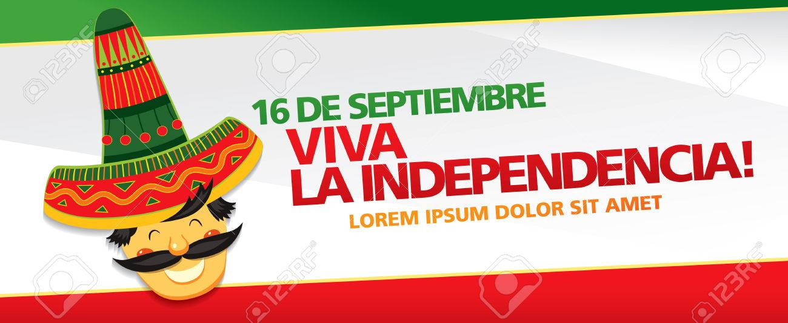
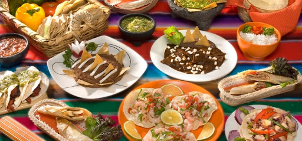

16 de septiembre y su historia
Se inicia la lucha por la Independencia de México
El movimiento por la independencia de México se inicia la madrugada del 16 de septiembre de 1810 en Dolores, Guanajuato.
En esa madrugada el cura Miguel Hidalgo y Costilla incitó a la rebelión contra la corona española que había dominado el país por casi 300 años. El ejército independentista –los rebeldes para el virrey- era un pequeño grupo de indios, mestizos y criollos en su mayoría sin instrucción militar alguna y armados con instrumentos de labranza. A falta de una bandera Hidalgo utilizó un estandarte de la Virgen de Guadalupe. Cuatro meses después los insurgentes eran 100,000 con 95 cañones.
Comida mexicana para celebrar este 16 de septiembre

- Chiles en nogada
- Pozole
- Moles
El mole poblano está galardonado como uno de los mejores de México y es uno de los platillos más representativos de este país. Oaxaca no se queda atrás con 7 moles, uno por cada región:
- El amarillito, que tradicionalmente se sirve con chochoyotas
- El negro que lleva chihuacle, que es el chile estrella
- Coloradito
- Verde
- Chichilo, el menos conocido pero de los más ricos
- Mancha manteles, típico también de Puebla
- Rojo
- Tamales
- Sopes
- Tostadas